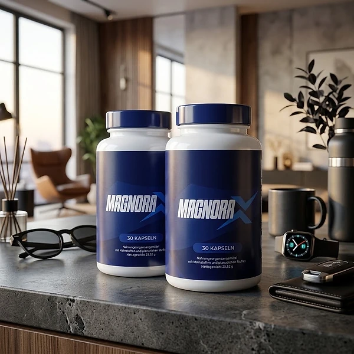
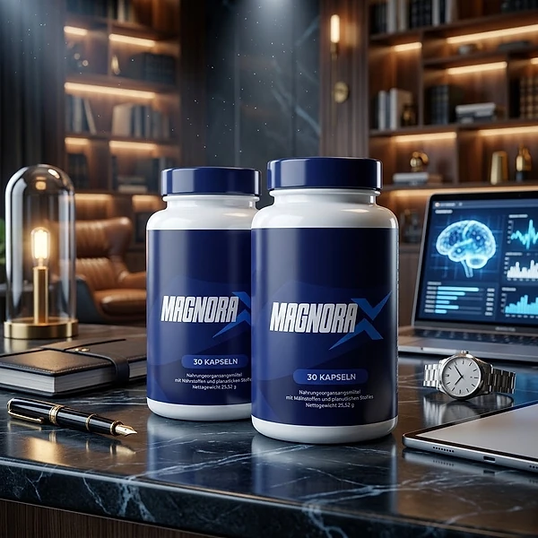
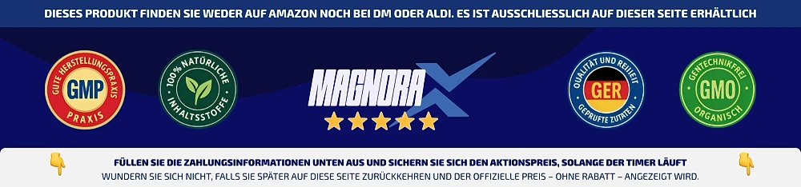

Qu’est-ce que MagnoraX et comment agit-il ?
MagnoraX (également appelé Magnora) est un complément alimentaire en gélules destiné aux hommes adultes. Le site officiel le présente comme une formule naturelle premium pour les hommes qui souhaitent retrouver de l’énergie et de l’élan au quotidien, en ne prenant qu’une seule gélule par jour.
Chaque flacon contient 30 gélules, ce qui correspond à un mois d’utilisation au rythme recommandé. La formule associe, selon le site, 8 ingrédients actifs : la vitamine B3 (niacine) et le zinc, les acides aminés L-citrulline et L-carnitine, ainsi que des extraits d’écorce de pin maritime, de racine de maca, de peau de raisin et de stigmates de safran.
Comment agit-il ? Le site officiel s’appuie exclusivement sur les allégations autorisées par le Règlement (UE) n° 432/2012 : le zinc contribue au maintien d’un taux normal de testostérone dans le sang, et la niacine contribue à réduire la fatigue ainsi qu’à un métabolisme énergétique normal. Le zinc contribue également à une fertilité et à une reproduction normales.
Pour la L-citrulline, la L-carnitine et les extraits de plantes, il n’existe pas d’allégation de santé autorisée dans l’UE, et la marque n’en formule aucune. Ces ingrédients font partie de la formule sans qu’un résultat précis puisse en être déduit.
Selon l’étiquette, MagnoraX est distribué dans l’UE par Digistore24 MSLW Limited, à Dublin, et les commandes passent par Digistore24. Les mentions légales du site indiquent un opérateur au Brésil et Digistore24 comme revendeur et partenaire contractuel.
Il est important de garder des attentes réalistes : les résultats peuvent varier d’une personne à l’autre. Un complément alimentaire ne remplace pas une alimentation variée et équilibrée ni un mode de vie sain, comme le précise d’ailleurs l’étiquette du produit.
MagnoraX n’est pas destiné à diagnostiquer, traiter, guérir ou prévenir une maladie. Toute personne ayant des problèmes de santé devrait consulter un médecin plutôt que de se fier uniquement à un complément alimentaire.
MagnoraX – Ingrédients
L’étiquette, visible sur le site officiel, indique la quantité de chaque ingrédient par gélule :
Vitamine B3 sous forme de niacine (20 mg, 125 % des VNR) : contribue selon le site à réduire la fatigue et à un métabolisme énergétique normal.
Zinc sous forme d’oxyde de zinc (11 mg, 110 % des VNR) : contribue selon le site au maintien d’un taux normal de testostérone dans le sang, ainsi qu’à une fertilité et à une reproduction normales.
L-Citrulline (150 mg) et L-Carnitine (150 mg) : deux acides aminés naturellement présents dans l’organisme.
Extrait d’écorce de pin maritime, Pinus pinaster (100 mg) : apprécié depuis des générations dans les traditions herbales européennes.
Extrait de racine de maca, Lepidium meyenii (50 mg) : racine cultivée sur les hauts plateaux des Andes, appréciée depuis des générations dans les traditions herbales.
Extrait de peau de raisin (15 mg) et extrait de stigmates de safran (5 mg) : raisin riche en polyphénols naturels et safran récolté à la main, l’une des épices les plus précieuses au monde.
Aucune valeur nutritionnelle de référence n’est fixée pour les acides aminés et les extraits de plantes. Parmi les autres ingrédients, l’étiquette mentionne l’hypromellose comme agent d’enrobage, la cellulose microcristalline comme charge, ainsi que des sels de magnésium d’acides gras alimentaires et du dioxyde de silicium comme antiagglomérants.
Les quantités déclarées permettent de discuter facilement de la formule avec un médecin ou un pharmacien et de la comparer avec d’autres produits que vous prenez déjà. Il n’y a pas de mélange secret sans dosages : chaque ingrédient figure sur le flacon avec sa dose. Cette transparence vous aide à prendre une décision éclairée avant de commencer la prise.
MagnoraX – Effets secondaires
Le site officiel ne publie pas de liste d’effets secondaires connus et indique que MagnoraX est bien toléré par la plupart des hommes. L’étiquette comporte toutefois des mises en garde claires qu’il convient de lire avant la première prise, car la tolérance varie d’une personne à l’autre.
MagnoraX n’est pas destiné aux personnes de moins de 18 ans ni aux femmes enceintes ou allaitantes. La dose recommandée ne doit pas être dépassée. La marque conseille également de consulter un médecin avant utilisation, en particulier si vous prenez des médicaments, si vous avez des restrictions de santé ou si vous êtes sous surveillance médicale. Un intervalle d’au moins 2 heures est recommandé entre la prise du complément et celle d’autres médicaments.
Il est généralement connu que la niacine peut, chez les personnes sensibles, provoquer occasionnellement une rougeur cutanée passagère accompagnée d’une sensation de chaleur. Si vous utilisez déjà d’autres compléments contenant de la vitamine B3 ou du zinc, surveillez la quantité totale et discutez-en avec votre médecin.
N’utilisez pas le flacon si le sceau de sécurité est endommagé ou absent. Conservez le produit hors de portée des enfants. Si des gênes ou des réactions inhabituelles apparaissent pendant la prise, arrêtez l’utilisation et demandez un avis médical en montrant de préférence l’étiquette. Votre médecin pourra ainsi évaluer rapidement quels ingrédients vous avez pris et s’il existe un lien avec les symptômes.
MagnoraX – Posologie
Selon l’étiquette, les adultes prennent une (1) gélule par jour. Le site de vente précise que la prise doit se faire au cours d’un repas, avec un grand verre d’eau. Avec 30 gélules dans chaque flacon, celui-ci suffit pour environ un mois.
La régularité est essentielle. La marque recommande une prise quotidienne pendant au moins 90 jours, dans le cadre d’une alimentation variée et équilibrée. En prenant la gélule chaque jour au même repas, on réduit le risque de l’oublier. Un complément alimentaire agit, le cas échéant, progressivement, et les résultats peuvent varier d’une personne à l’autre. Observez donc calmement comment vous vous sentez au fil du temps.
Ne dépassez pas la dose recommandée. Prendre plus de gélules n’apporte aucun bénéfice supplémentaire, mais augmente la quantité de niacine et de zinc ingérée. Si vous prenez des médicaments ou si vous avez un problème de santé, parlez-en à votre médecin ou à votre pharmacien avant de commencer.
MagnoraX est conçu pour accompagner un mode de vie sain, pas pour le remplacer. Une alimentation équilibrée, une activité physique régulière et un sommeil suffisant restent la base, comme le rappelle d’ailleurs l’étiquette du produit.
Pour la conservation, la marque recommande un endroit frais et sec, à une température inférieure à 30 °C, hors de portée des enfants. La date de péremption figure sur le dessous du flacon.
MagnoraX – Remboursement
Selon le site officiel, MagnoraX bénéficie d’une garantie satisfait ou remboursé de 60 jours. Le délai court à compter de la date d’achat, d’après la politique de remboursement, et il n’est pas nécessaire de fournir un motif.
Étape 1 : Vérifiez, à l’aide de votre confirmation de commande, que vous êtes encore dans le délai de 60 jours.
Étape 2 : Envoyez un e-mail au service client à support@centralmeister.com en indiquant votre numéro de commande. Attendez ensuite les instructions de retour.
Étape 3 : Renvoyez tous les flacons, vides ou pleins, avec votre numéro de commande, votre nom, votre adresse et vos coordonnées. Le site indique comme adresse de retour MagnoraX Returns, Kleine Esch 669, 2841 MK Moordrecht, Pays-Bas. Les frais de retour sont à la charge du client, et les frais d’expédition initiaux ne sont pas remboursés. Un envoi avec suivi est recommandé.
Étape 4 : Après réception et vérification du colis, vous recevrez un e-mail de confirmation. Le remboursement sera effectué par le moyen de paiement initial, selon la politique dans un délai de 5 à 10 jours ouvrables après réception.
Lisez la politique de remboursement complète sur le site officiel avant de commander et conservez soigneusement votre confirmation de commande ainsi que le numéro de suivi de votre envoi de retour, car sans suivi, un colis perdu ne peut être vérifié. Si le remboursement tarde, la politique conseille de vérifier d’abord votre compte bancaire, puis de contacter l’émetteur de votre carte ou votre banque, car le traitement peut prendre quelques jours selon l’établissement. Ce n’est qu’après ces vérifications que vous devriez recontacter le service client.
MagnoraX – Où l’acheter ?
MagnoraX se commande sur le site officiel get-magnora.com, et le paiement est traité par Digistore24. Selon la politique d’expédition, la livraison couvre toute la France, généralement sous 5 à 10 jours ouvrables ; après l’envoi, les acheteurs reçoivent un e-mail avec le numéro de suivi, et le colis est emballé de manière discrète. Le support est joignable par e-mail.
Des offres de revendeurs inconnus peuvent paraître identiques, mais leur provenance et leurs conditions de stockage ne peuvent être vérifiées. Pour un complément alimentaire, c’est une question de qualité et de sécurité. Un achat en dehors du site officiel n’est probablement pas couvert par la garantie de 60 jours.
C’est pourquoi la plupart des acheteurs commandent MagnoraX directement auprès du fabricant. Vous y recevez le produit authentique, l’accès au service client et la garantie complète. Vous y trouvez également les informations les plus récentes sur la formule et les conditions de la marque.
Avant de commander, lisez l’étiquette et la politique de remboursement. Lors du paiement, vérifiez que vous êtes bien sur le site officiel MagnoraX et que le processus de commande passe par Digistore24, afin d’éviter les contrefaçons.
Pour être sûr d’obtenir le produit authentique, la plupart des utilisateurs choisissent de passer par le site officiel.
MagnoraX est-il une arnaque ?
D’après les informations du site officiel et de l’étiquette, MagnoraX ne semble pas être une arnaque. Il s’agit d’un véritable complément alimentaire vendu par l’intermédiaire de Digistore24, une plateforme de paiement reconnue, et il s’adresse aux hommes adultes qui souhaitent soutenir leur vitalité et leur énergie au quotidien.
Points positifs : l’étiquette complète avec les dosages par gélule, les mises en garde clairement formulées et une page dédiée aux références scientifiques qui ne cite que les allégations autorisées dans l’UE pour le zinc et la niacine. Le site publie également une politique de remboursement, une politique d’expédition et des mentions légales avec une adresse de retour.
Quelques points méritent cependant attention. La page de commande promet un remboursement « sans avoir à vous justifier », mais la politique exige le renvoi de tous les flacons à la charge du client et ne rembourse pas les frais d’expédition initiaux. L’étiquette mentionne Digistore24 MSLW Limited à Dublin, les mentions légales citent Digistore24 GmbH à Hildesheim et un opérateur au Brésil. Des formulations comme « beaucoup d’hommes rapportent plus d’énergie en 2 à 3 semaines » ne constituent pas des résultats garantis ; seules les allégations autorisées sur le zinc et la niacine sont fiables.
Chaque commande passée sur le site officiel est couverte, selon la politique de remboursement publiée, par une garantie satisfait ou remboursé de 60 jours à compter de la date d’achat.
Pour les hommes adultes à la recherche d’un complément alimentaire simple et quotidien avec une formule transparente, MagnoraX peut être une option, de préférence commandé sur le site officiel et après avis médical si vous prenez des médicaments.
Pour vérifier les détails du produit ou sa disponibilité actuelle, le site officiel de MagnoraX reste l’option la plus sûre.

Vérifier la disponibilité sur le site officiel
